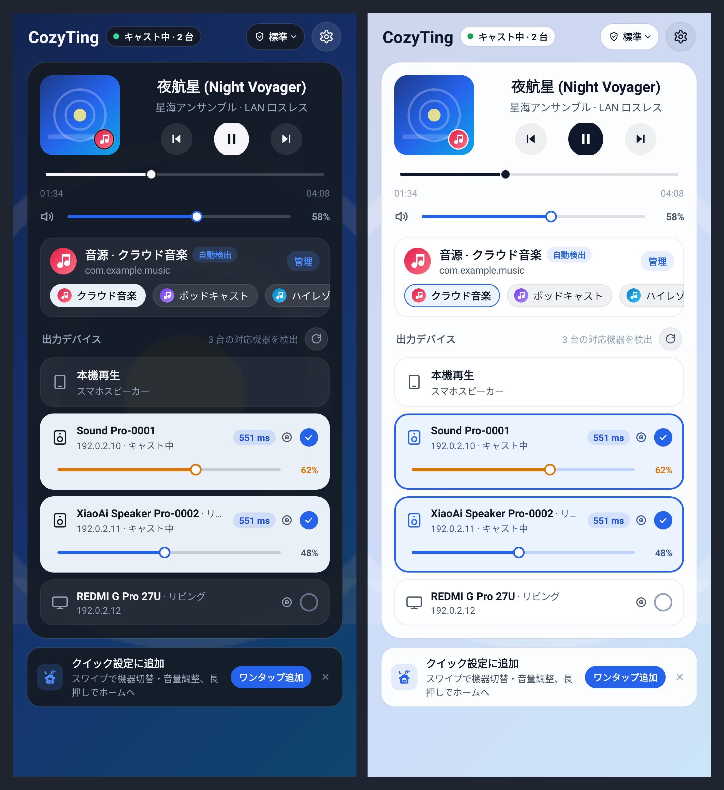
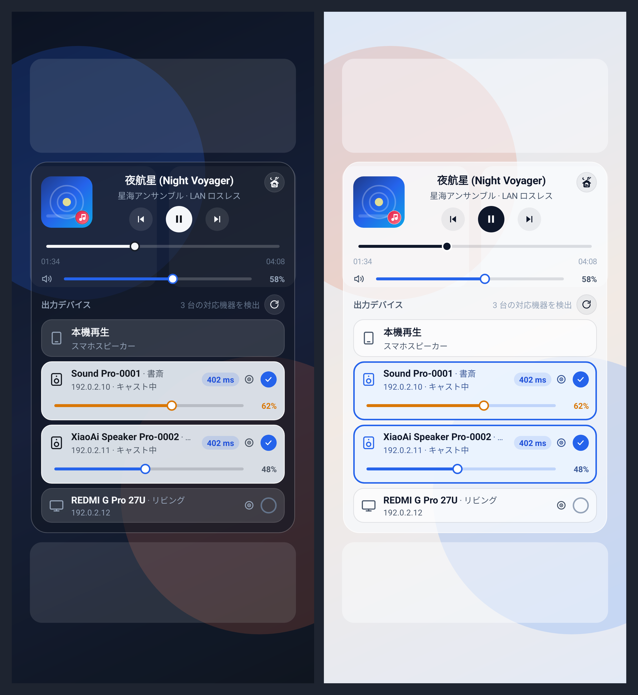
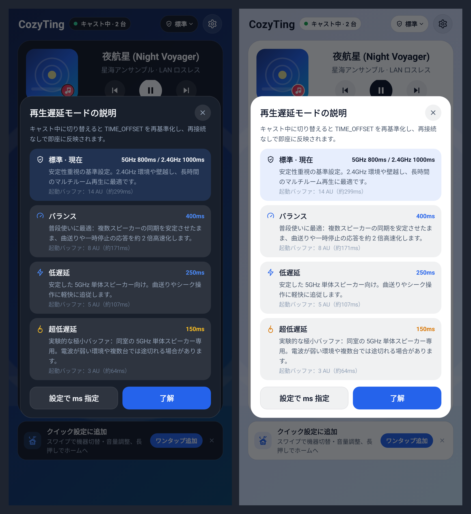
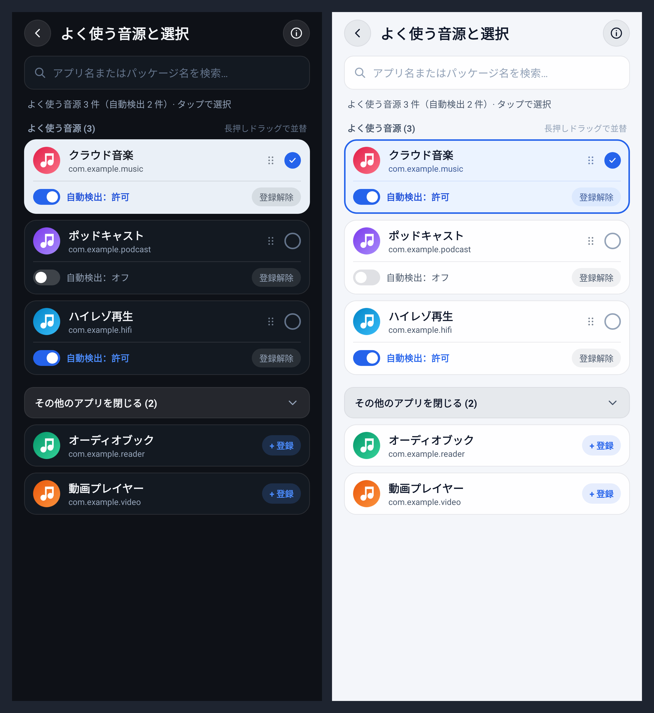
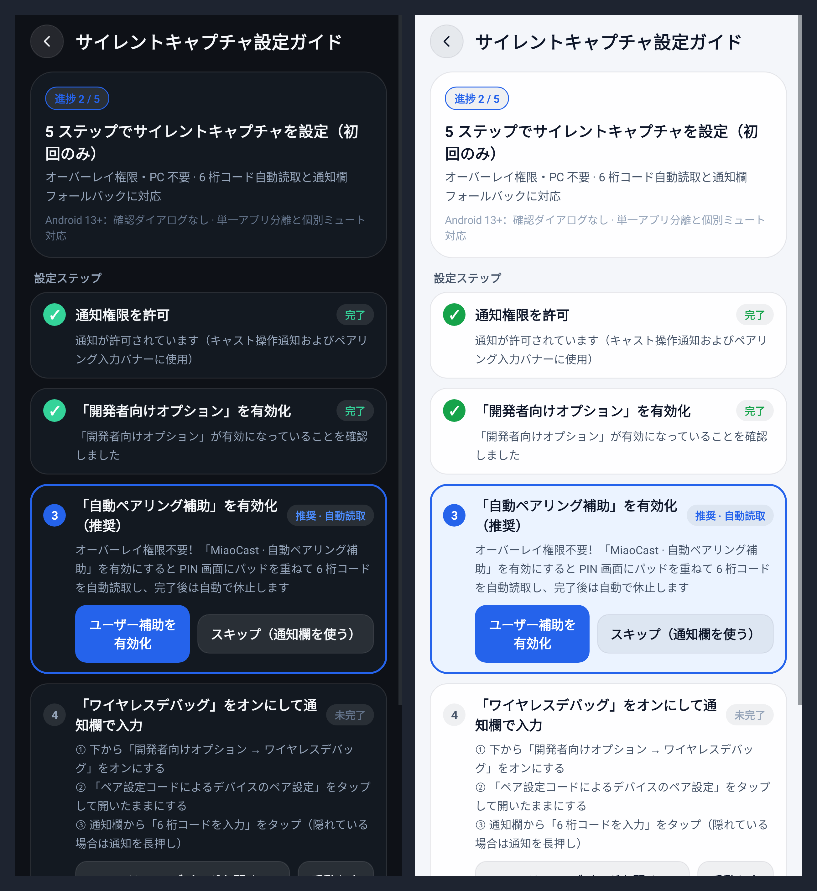
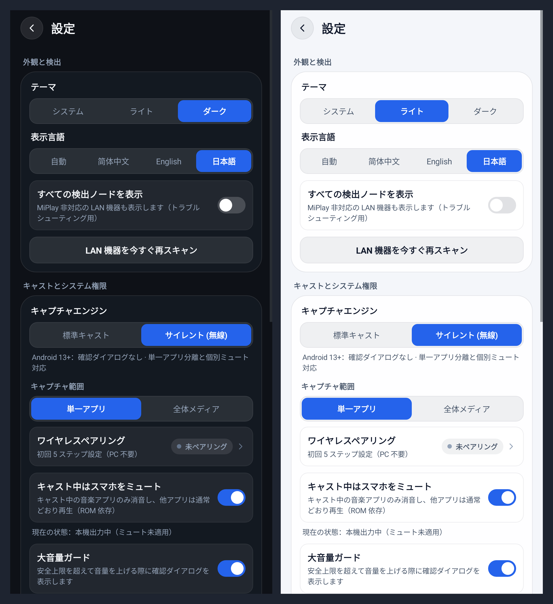
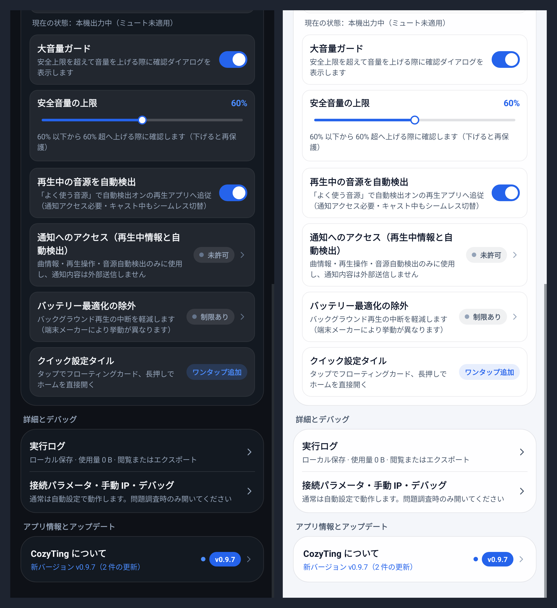
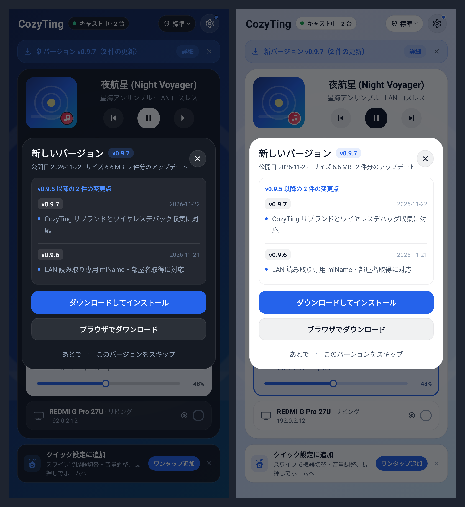

端末メーカー不問・LAN 直結
Pixel・Galaxy・Xperia・OnePlus・OPPO・vivo・Huawei などあらゆる Android 10+ 端末から、自宅 Wi-Fi 内の Xiaomi / XiaoAi スピーカーへクラウド経由なしで直接接続します。
CozyTing（窝爱听）は無料・オープンソースのサードパーティ製 MiPlay 完全 LAN 音声送信アプリです（Android 10+ 対応、iOS 計画中）。 端末メーカー不問・Root 不要・Xiaomi アカウント不要で、選んだ 1 つの音楽アプリだけを最大 63 台の Xiaomi / XiaoAi スピーカーへミリ秒単位で同期再生。仕事の通知やボイスメッセージはスマホに留め、部屋じゅうを好きな音楽だけで満たします。

仕事で疲れて帰った夜、自分の部屋のあたたかい灯りをつけて、お気に入りの曲を部屋いっぱいに流す——そのほっとする時間を守るために CozyTing は生まれました。
DLNA / AirPlay ブリッジ・クラウド中継、Bluetooth、純正 MiPlay、画面ミラーリングと比較して、端末の自由度・NAS 不要の完全 LAN 直結・マルチルーム Wi-Fi 同期・単一アプリ分離を高い次元で両立します。
| 比較項目 | CozyTing | DLNA / AirPlay ブリッジ・クラウド中継 | Bluetooth 接続 | 純正 Xiaomi MiPlay | 画面ミラーリング |
|---|---|---|---|---|---|
| 対応スマホメーカー | メーカー不問（あらゆる Android 10+・iOS 計画中） | メーカー不問 | メーカー不問 | 一部 Xiaomi / Redmi 端末限定 | メーカー不問 |
| NAS / サーバー要否 | NAS / Docker / PC 不要・スマホ単体で即利用 | 多くは常駐 NAS / ルーター必須、スマホ中継はバックグラウンド維持依存 | 不要 | 不要 | 不要 |
| マルチルーム同期 | 最大 63 台をミリ秒同期・再生中の追加/解除可 | 多くは単体送信、または別途オーディオハブ構築が必要 | 通常 1 台限定・複数台はズレ発生 | 複数 MiPlay 機器に対応 | 単体または高遅延 |
| 単一アプリ音声分離 | 選択した音楽アプリのみ送信・DLNA ボタン不要 | DLNA / AirPlay 送信ボタン搭載アプリに限定 | 端末の全音声をそのまま出力 | メディアソース指定に対応 | 画面・音声すべてをブロードキャスト |
| 動画視聴で音楽が止まらない | デュアルゾーン AudioFocus 分離（Android 13+ サイレント） | URL 転送型は端末音声と独立 | 動画再生でスピーカー音楽が即停止 | OS バージョンに依存 | 分離不可 |
| アプリを離れずに即操作 | コントロールセンター＆通知タップで半透明フローティングパネル＋物理音量キー直操作 | ブリッジアプリや Web 管理画面へ切替が必要 | システム Bluetooth 画面のみ・個別音量不可 | コントロールセンターカード対応 | システムキャスト画面へ移動が必要 |
| 再生遅延の調整 | 4 段階（150–1000ms）＋カスタム ms を再接続なしで切替 | 調整不可 | 調整不可 | 調整不可 | 調整不可 |
| プライバシー・アカウント | 完全 LAN ネイティブ MiPlay・アカウント不要・AGPL-3.0 | 多くは Xiaomi アカウントログイン・クラウド API 依存 | ローカル（クローズド） | Xiaomi アカウント・純正 ROM 依存 | ベンダーサービスに依存 |
複雑な複数台クロック同期や LAN プロトコル処理を裏側に隠し、迷わず使える軽快な操作体験だけを残しました。
Pixel・Galaxy・Xperia・OnePlus・OPPO・vivo・Huawei などあらゆる Android 10+ 端末から、自宅 Wi-Fi 内の Xiaomi / XiaoAi スピーカーへクラウド経由なしで直接接続します。
Fail-Closed な単一 UID 分離により、端末全体の音声やマイク入力へフォールバックしません。リビングで音楽を流していても通知音やボイスメッセージは音漏れしません。
端末内で 6 桁ペアリングコードを一度設定するだけで、毎回の画面キャスト確認ダイアログを省略。音楽アプリのみの個別ミュートとデュアルゾーン AudioFocus 分離を解放します。
リビング・寝室・書斎のスピーカーを同時に選択して同期再生。部屋名・リアルタイム遅延（ms）・個別音量スライダーを備え、曲の途中でも台数を自由に追加・解除できます。
上部バーから標準（800/1000ms）・バランス（400ms）・低遅延（250ms）・超低遅延（150ms）やカスタム ms へ再接続なしでシームレスに切り替えられます。
お気に入りの音楽・ポッドキャストアプリを登録して自動検出を個別に設定可能。アルバム連動背景、ダーク/ライト/システム連動テーマ、SHA-256 署名検証付きアップデートを備えます。
サードパーティ製とは思えない OS 純正のような軽快さ。スマホを見ながら、引き下げてワンタップするだけで寝室のスピーカーを追加したり音量を微調整し、余白タップですぐ元の画面に戻れます。
+/- キーでキャスト全体音量をそのまま操作可能（システム音量バー非表示・大音量ガード対応）。前回のスピーカー構成もワンタップで復元できます。

ナレーションなしのビジュアルデモ：端末メーカー不問の接続、音楽アプリの自動切替追従、ショート動画再生とスピーカー音楽の分離、家じゅう同期×4 段階遅延切替、コントロールセンター＆通知から即開くフローティング操作パネル、完全 LAN プライバシー設計を紹介。
すべてのスクリーンショットは Android 実機ビュー階層から直接レンダリングした日本語版 UI です。






Android 10（API 29）以上の arm64-v8a 端末に対応。GitHub Releases から署名済み APK を入手します。
スマホと Xiaomi / XiaoAi スピーカーを同一ルーターの LAN に接続すると、対応スピーカーが自動検出されます。
標準モードは Android 10+ で即利用可能。Android 13+ ではサイレントモードに加え、クイック設定タイルをワンタップ追加しておくとどのアプリ上からも即操作できます。
対応端末、プライバシー境界、ワイヤレスデバッグ設定、iOS 計画などに関する主な質問をまとめました。
cozyting_core.h C ABI および XCFramework ビルド基盤）とクロスプラットフォーム UI 仕様は整備済みです。ネイティブ SwiftUI + ReplayKit 版 iOS クライアントを計画中です。CozyTing の全機能は完全無料・オープンソース・完全 LAN 動作で、課金制限や限定機能は一切ありません。毎日の音楽時間を心地よくできたなら、GitHub の Star や任意の応援で継続開発を支えていただけると嬉しいです。